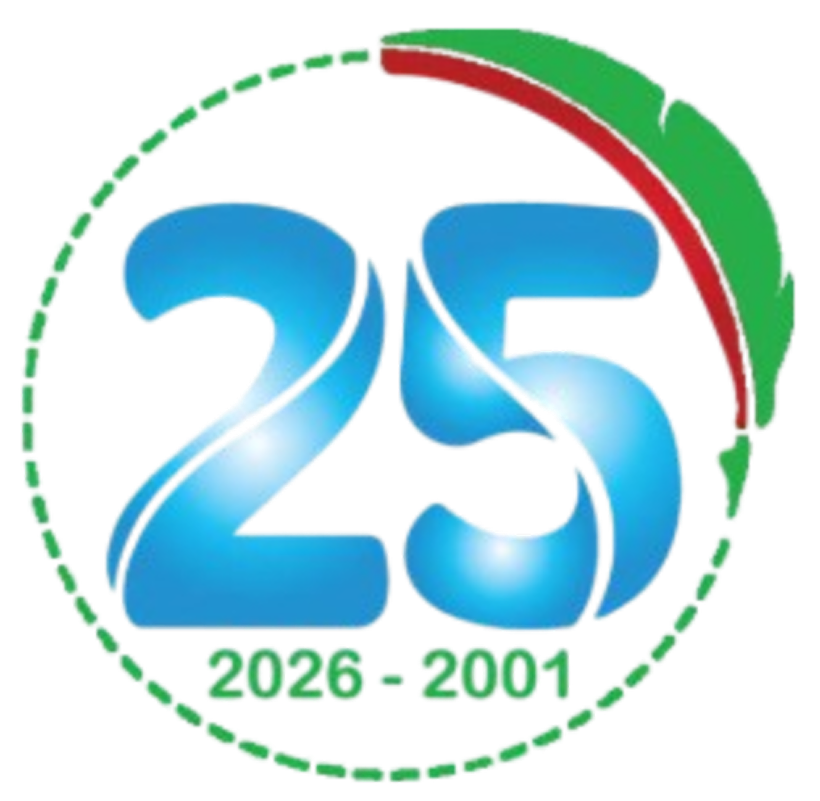

2001 – 2026 · لانطلاق التعليم بمركب المنار

«مؤسسة المنار بعد ربع قرن من تأسيسها قد اكتملت معالم شخصيتها، وتبلورت فلسفة عملها، وترسخت قيمها في الأصالة والتميز والتعاون، هي الآن تتقدم بخطى ثابتة نحو غايتها.» — الشيخ بالحاج محمد، مدير مؤسسة المنار للتربية والتعليم
ولدت المؤسسة وترعرعت في حي تجاري حديث النشأة، فتحمّل فريقها وتلاميذها وأولياء أمورهم بكل صبر انعدام التهيئة وضعف الهياكل ونقص الوسائل. وإن كنا ننسى فلا ننسى أن جميع الوحدات من الابتدائي إلى الثانوي كانت تنشط في مبنى واحد، وأننا كنا نعمل جميعا بحاسوب بسيط واحد ووحيد، وأننا كنا نغير أحذيتنا في مدخل المؤسسة لأن الشوارع لم تكن معبّدة.
غدت مؤسسة المنار بعد هذه المسيرة مؤسسة اجتماعية خيرية تربوية وتعليمية ترعى الآلاف من أبناء المجتمع في بيئة آمنة محفزة وبجودة تعليمية متميزة، ومثالا يحتذى للاستثمار في الأوقاف، وأنموذجا حضاريا في الفلسفة والقيم والتسيير، وأداة فاعلة في مسيرة التنمية الاجتماعية والاقتصادية.
نتذكر إخوانا وأخوات لنا كانوا رفاق الدرب في هذه المسيرة، ونخص منهم الأستاذ محمد شريفي رحمه الله، الذي ضحّى بنفسه من أجل أن ينقذ تلاميذه من الغرق في رحلة ترفيهية. ونترحم على الأساتذة: أحمد اطفيش، وعمر آل حكيم، ومحفوظ عفاري، وحسني حليمة، وحفار بكير، ونجاة خلفاوي، وعمر فردي، ومعلال فاطمة الزهراء، ويوسف لعساكر، ونورة نايت يحي. رحمهم الله جميعا وجزاهم عمّا قدموه خيرا.